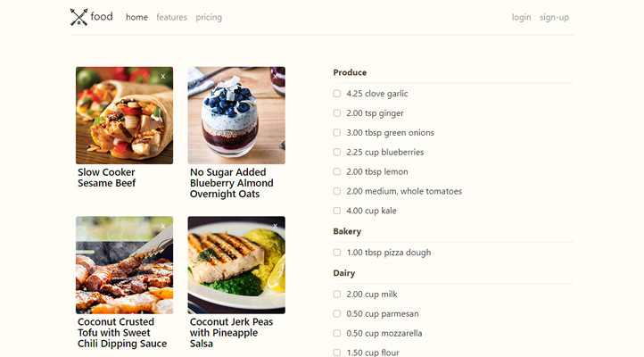

Parsely for Style
Promoting healthy eating by reducing the barriers of cooking
View demo »
Screenshot

Built to reduce the hardest part of cooking, the prep. I wanted an app that made it easy to select a recipe and build a grocery list
Tools Used
- Django
- Amazon Web Services (AWS)
- Postgres + SQLite3
Django
This my first time making an app in Django. Python is one of my favorite programming languages and this was fun and will try it for other apps in the future
AWS
AWS runs this site as an S3 bucket. This app uses the power avaiable though this service much better. Setting up an Elastic Beanstalk App. THis automatically starts a EC2 server and Load balancing.
Postgres + SQLite3
The Postgres database runs RDS on AWS. This is overkill for this application but allows flexiblity to develop the app further. I would like to add user lists and being able to upload your our recipes.
On the local machine side for testing SQLite3 server is setup. THis was for people who want to try the app out without starting an Postgres database.